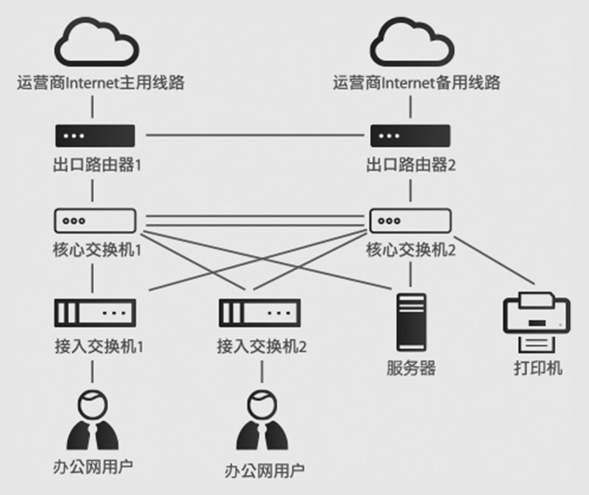
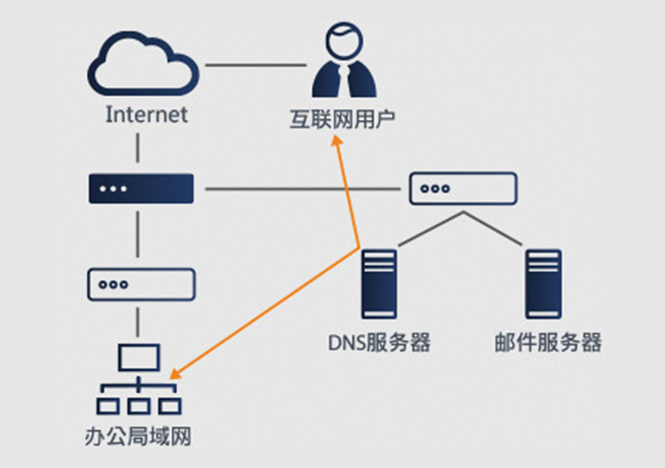
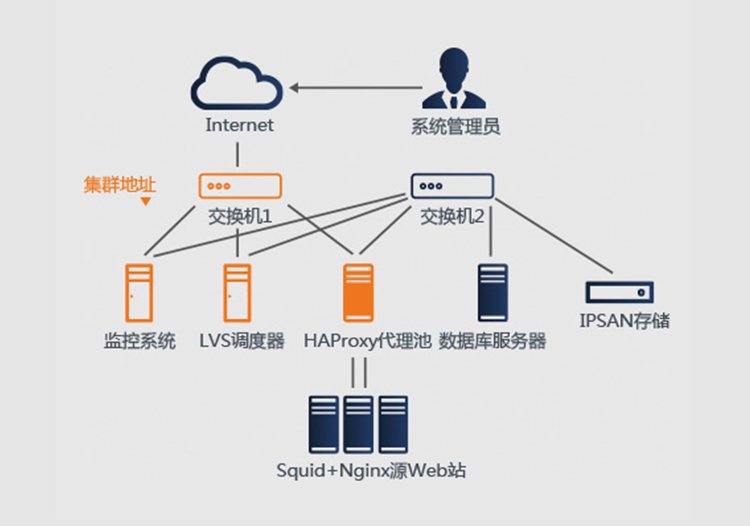

互联网"薪"宠儿
2013年Linux基金会发布"Linux就业报告"，对2300名企业招聘经理进行了 调查，其中80%的企业表示招聘Linux人才是今年的重中之重，50%多表示 将增加招聘Linux相关职位。与此同时，"IT从业人员的平均薪水同比涨幅为 2%，而Linux人员的薪水同比涨幅为5%。85%的企业表示，寻找Linux人才 十分困难。
构建大型企业网络结构
学会如何保障整个网络的基础平台稳定
• 配置核心交换机，实现互联线缆的以太网链路捆绑;
• 配置核心交换机，实现HSRP冗余网关;
• 配置接入层交换机的内网Vlan划分;
• 配置出口两台路由器，实现内网用户访问外网的NAT地址转换;
• 配置静态路由及默认路由，实现全网互通;
• 配置相应接口ACL指令，控制外网机内网与服务器的互通。

构建智能DNS及邮件系统
学会如何熟练地管理和维护邮件服务器
• 使用BIND提供智能DNS解析、实现内外分离;
• 使用Postfix+Dovecot提供邮件收发服务;
• 使用EXTMail为用户提供Web邮箱界面;
• 使用EXTMan为管理员提供邮箱管理接口;
• 针对邮件内容实现病毒扫描、垃圾邮件过滤。

构建百万并发Web集群架构
学会如何在生产环境中
要保证服务器7×24小时不间断提供服务
• 使用LVS+HAProxy 实现负载分发;
• 使用Keepalived 实现资源间的高可用性;
• 使用Nginx+Squid 缓存组提高Web 响应能力;
• 使用IPSAN 提供共享的数据存储;
• 使用Cacti+Nagios 实现设备和服务资源监控;
• 使用PXE+Kickstart 技术快速部署服务器;
• 使用Oracle 或MySQL 构建数据库双机系统。

人才服务
Talent service
通过印特旗下二级学院 ，为超过一万名处于大学4年和步入职场前5年的青年群体提供岗前互联网相关技能培训服务和就业帮助。 为国内外企业提供互联网人才输送和人才咨询服务，致力于搭建企业和人才之间的敏捷对接平台。
强大企业后援
享受优先就业权
各大名企常年与印特
保持密切合作，
打造“就业直升班”，
毕业不愁没出路
真正打造行业所需人才
各大名企常年与印特
保持密切合作，
打造“就业直升班”，
毕业不愁没出路
多平台教学模式
各大名企常年与印特
保持密切合作，
打造“就业直升班”，
毕业不愁没出路
更科学、人性化的课程规划
各大名企常年与印特
保持密切合作，
打造“就业直升班”，
毕业不愁没出路
9
大优势
让你看
得到效果
免费重修，学会为止
各大名企常年与印特
保持密切合作，
打造“就业直升班”，
毕业不愁没出路
保就业，敢书面承诺
各大名企常年与印特
保持密切合作，
打造“就业直升班”，
毕业不愁没出路
有实力，更高薪
各大名企常年与印特
保持密切合作，
打造“就业直升班”，
毕业不愁没出路
保就业，敢书面承诺
各大名企常年与印特
保持密切合作，
打造“就业直升班”，
毕业不愁没出路

 025-8598-5715
025-8598-5715 南京建邺区奥体大街68号新城科技园（国际研发总部园)2栋7楼C区
南京建邺区奥体大街68号新城科技园（国际研发总部园)2栋7楼C区 地铁10号线中胜站下转乘129路;170路;305路至泰山路·奥
体大街站
地铁10号线中胜站下转乘129路;170路;305路至泰山路·奥
体大街站